Time Response: Analysis of Control Systems
Control 4
Imron Rosyadi
Learning Objectives
After this session, you will be able to:
- Use poles and zeros of transfer functions to determine the time response of a control system.
- Describe quantitatively the transient response of first-order systems.
- Write the general response of second-order systems from pole locations.
- Compute damping ratio \(\zeta\) and natural frequency \(\omega_n\) from a transfer function.
- Find \(T_s\), \(T_p\), %OS, and \(T_r\) for underdamped second-order systems.
- Relate real-world ECE systems (RC/RL, RLC, mechanical) to first- and second-order models.
Motivation: Why Time Response Matters
- Control systems are designed to make outputs follow desired inputs over time.
- Two key aspects:
- Steady-state behavior (accuracy).
- Transient behavior (speed, overshoot, oscillation).
- Time response answers questions like:
- How fast does a motor reach the commanded speed?
- Does a robot arm overshoot and oscillate?
- How “snappy” or “sluggish” is an amplifier or filter?
Tip
Think of flicking a light switch vs. motion of an elevator. Both reach a “final value,” but with very different transient behavior.
System Representations: Frequency vs Time
Recall from earlier chapters:
- Transfer functions in the \(s\)-domain (Laplace):
- Derived from differential equations.
- Convenient for algebraic manipulation and block diagrams.
- State-space in the time domain:
- \(\dot{x} = Ax + Bu\)
- \(y = Cx + Du\)
In this chapter, we:
- Start with a mathematical model (usually a transfer function).
- Use poles and zeros to predict time response.
Forced vs Natural Response
Any linear time-invariant (LTI) system output can be decomposed as:
\[ y(t) = y_f(t) + y_n(t) \]
- Forced response \(y_f(t)\):
- Caused directly by the input.
- Also called particular solution.
- Natural response \(y_n(t)\):
- System’s own modes; how it behaves when “left alone.”
- Decays (or not) based on system poles.
Note
Key idea:
- Input poles \(\Rightarrow\) shape of the forced response.
- System poles \(\Rightarrow\) shape of the natural response.
Poles and Zeros – Definitions
Transfer function: \[ G(s) = \frac{N(s)}{D(s)} \]
- Poles: values of \(s\) where \(G(s)\) becomes infinite.
- Roots of \(D(s) = 0\).
- In control we also treat canceled denominator roots as “poles” because they still reflect system dynamics.
- Zeros: values of \(s\) where \(G(s)\) becomes zero.
- Roots of \(N(s) = 0\).
- Likewise, canceled numerator roots are still called “zeros” in control.
Important
Even if a pole-zero pair cancels algebraically, the physical mode may still exist. We keep track of them conceptually for design and robustness.
First Example: Simple Pole–Zero System
Given the transfer function (from Fig. 4.1a):
\[ G(s) = \frac{s+2}{s+5} \]
With a unit step input \(R(s) = \frac{1}{s}\),
\[ C(s) = G(s)R(s) = \frac{s+2}{s(s+5)} = \frac{\frac{2}{5}}{s} + \frac{\frac{3}{5}}{s+5} \]
Inverse Laplace transform:
\[ c(t) = \frac{2}{5} + \frac{3}{5} e^{-5t} \]
- Forced response: \(\frac{2}{5}\) (constant step).
- Natural response: \(\frac{3}{5} e^{-5t}\).
Visualizing Poles and Zeros in the \(s\)-Plane
- Real-axis pole at \(s=-5\).
- Real-axis zero at \(s=-2\).
- Input pole at \(s=0\) (from \(1/s\)).
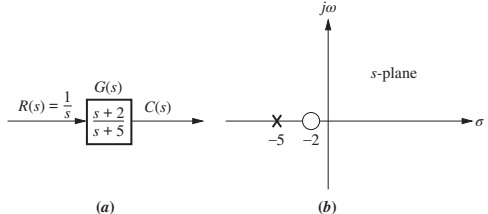
- Real-axis pole \(\Rightarrow\) response term of form \(e^{-\alpha t}\).
- Pole at \(-5\) \(\Rightarrow e^{-5t}\) term.
- The farther left the pole (more negative real part), the faster the exponential decays.
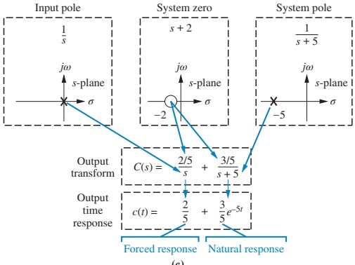
Takeaways from the Example
From \(C(s) = \frac{s+2}{s(s+5)}\) → \(c(t) = \frac{2}{5} + \frac{3}{5}e^{-5t}\):
- A pole of the input (at \(s=0\)) generated the forced response (step).
- A pole of the transfer function (at \(s=-5\)) generated the natural response \(e^{-5t}\).
- A real-axis pole at \(s=-\alpha\) always generates a term \(e^{-\alpha t}\).
- More negative \(\alpha\) → faster decay.
- Zeros and poles together determine the amplitudes of these components (the coefficients 2/5 and 3/5).
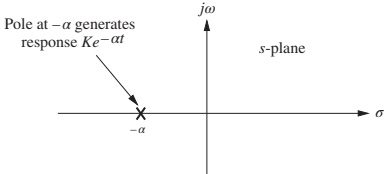
Example: Response Form by Inspection (Real Poles)
Given (Example 4.1):
\[ R(s) = \frac{1}{s}, \quad G(s) = \frac{s+3}{(s+2)(s+4)(s+5)} \]
By inspection,
\[ C(s) = \frac{K_1}{s} + \frac{K_2}{s+2} + \frac{K_3}{s+4} + \frac{K_4}{s+5} \]
Inverse Laplace:
\[ c(t) = K_1 + K_2 e^{-2t} + K_3 e^{-4t} + K_4 e^{-5t} \]
- \(K_1\) → forced response (step).
- exponentials → natural response.
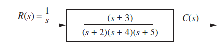
Tip
Pattern: each real pole at \(s = -a_i\) adds a term \(e^{-a_i t}\) to the natural response.
Skill Check – Real Poles
Given: \[ G(s)=\frac{10(s+4)(s+6)}{(s+1)(s+7)(s+8)(s+10)},\quad R(s)=\frac{1}{s} \]
Question: Write the general form of the step response \(c(t)\) by inspection.
Answer:
\[ c(t)\equiv A + B e^{-t} + C e^{-7t} + D e^{-8t} + E e^{-10t} \]
First-Order Systems (No Zeros)
Consider a first-order system (Fig. 4.4a):
\[ G(s) = \frac{a}{s + a},\quad a > 0 \]
With unit step input \(R(s) = \frac{1}{s}\):
\[ C(s)=\frac{a}{s(s+a)} \Rightarrow c(t) = 1 - e^{-at} \]
- Forced response: \(1\) (steady-state).
- Natural response: \(-e^{-at}\) from pole at \(s=-a\) (Fig. 4.4b).
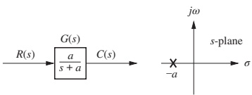
Time Constant of a First-Order System
From \(c(t) = 1 - e^{-at}\):
At \(t = 1/a\):
\[ e^{-at}\big|_{t=1/a} = e^{-1} \approx 0.37 \]
So
\[ c(1/a) = 1 - 0.37 = 0.63 \]
Time constant:
- \(\tau = \dfrac{1}{a}\)
- Time for the step response to reach 63% of its final value.
- Also: time for the exponential \(e^{-at}\) to decay to 37% of its initial value.
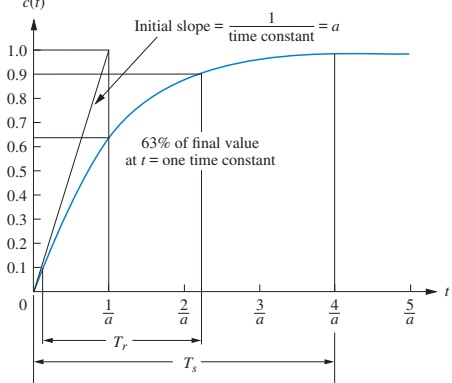
Note
Pole at \(s=-a\) ↔︎ time constant \(\tau = 1/a\). Farther left pole → smaller \(\tau\) → faster response.
First-Order: Rise Time and Settling Time
For \(c(t) = 1 - e^{-at}\):
Rise time \(T_r\)
- Time for \(c(t)\) to go from 10% to 90% of final value:
- Solve \(1 - e^{-at} = 0.1\) and 0.9, subtract:
\[ T_r = \frac{2.2}{a} \]
Settling time \(T_s\) (2% criterion)
- Time to reach and stay within 2% of final value.
- Solve \(1 - e^{-at} = 0.98\):
\[ T_s = \frac{4}{a} \]
Tip
For a first-order system with pole at \(s=-a\):
- \(\tau = 1/a\)
- \(T_r \approx 2.2\tau\)
- \(T_s \approx 4\tau\)
Identifying a First-Order Transfer Function from Test Data
Real-world scenario:
- You can step the input and measure the output, but do not know internal details.
- If the response looks like a first-order curve (no overshoot, single exponential), you can estimate \(G(s)\) from the step response.
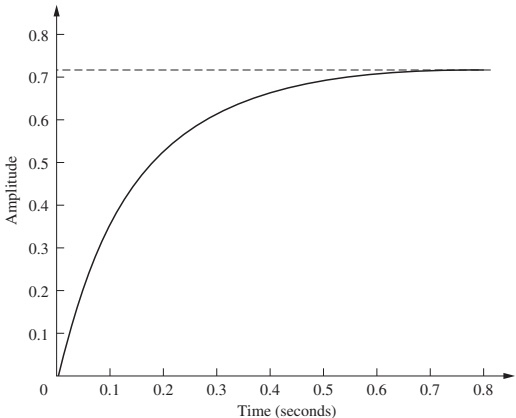
Procedure:
- Measure final value \(c_{\infty}\) → equals \(K/a\) for \(G(s) = \dfrac{K}{s+a}\).
- Measure time constant \(\tau = 1/a\):
- Time at which \(c(t) \approx 0.63\,c_{\infty}\).
- Compute \(a = 1/\tau\), then \(K = a\,c_{\infty}\).
In Fig. 4.6:
- \(c_{\infty} \approx 0.72\).
- \(0.63 c_{\infty} \approx 0.45\) at \(t \approx 0.13\) s → \(a \approx 7.7\).
- \(K/a = 0.72 \Rightarrow K \approx 5.54\).
- So \(G(s) \approx \dfrac{5.54}{s+7.7}\).
Skill Check – First-Order Specs
Given: \(G(s) = \dfrac{50}{s+50}\)
- Pole at \(s = -50\) → \(a = 50\)
- Time constant: \(\tau = 1/a = 0.02\) s
- Settling time: \(T_s = 4/a = 0.08\) s
- Rise time: \(T_r = 2.2/a \approx 0.044\) s
Answer: \(T_c = 0.02\,\)s, \(T_s = 0.08\,\)s, \(T_r = 0.044\,\)s.
Second-Order Systems – Richer Dynamics
General second-order transfer function (no zeros):
\[ G(s) = \frac{b}{s^{2} + a s + b} \]
Depending on \(a\) and \(b\), the poles may be:
- Two distinct real poles → overdamped.
- Complex conjugate with negative real part → underdamped.
- Repeated real pole → critically damped.
- Purely imaginary → undamped oscillation.
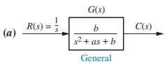
Overdamped Second-Order Response
Example (Fig. 4.7b):
\[ C(s)=\frac{9}{s(s^{2}+9s+9)} =\frac{9}{s(s+7.854)(s+1.146)} \]
- Poles at \(0\), \(-7.854\), \(-1.146\).
- Input pole at 0 → constant forced response.
- Two real system poles → two exponentials in natural response.
Form:
\[ c(t) = K_1 + K_2 e^{-7.854 t} + K_3 e^{-1.146 t} \]
This is an overdamped response: - No oscillation. - Response is sluggish compared to critically damped.
Underdamped Second-Order Response
Example (Fig. 4.7c):
\[ C(s) = \frac{9}{s(s^{2}+2s+9)} \]
System poles at:
\[ s = -1 \pm j\sqrt{8} \]
- Real part \(-1\) → exponential decay rate.
- Imag part \(\sqrt{8}\) → oscillation frequency.
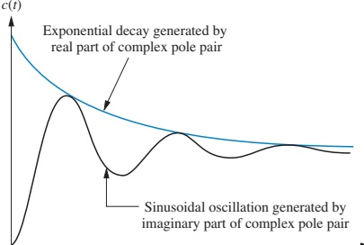
Form:
\[ c(t) = K_1 + A e^{-t} \cos(\sqrt{8}\,t - \phi) \]
Note
Complex poles \(s = -\sigma_d \pm j\omega_d\) → Natural response \(e^{-\sigma_d t}\cos(\omega_d t - \phi)\).
Example: Form of an Underdamped Response (By Inspection)
Given (Example 4.2, Fig. 4.9):
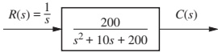
- Transfer function has poles at \(s = -5 \pm j13.23\).
- Real part \(\sigma_d = 5\) → decay rate \(e^{-5t}\).
- Imag part \(\omega_d = 13.23\) → oscillation frequency.
Form of step response:
\[ c(t) = K_1 + e^{-5t}\left(K_2\cos 13.23 t + K_3\sin 13.23 t\right) \]
or
\[ c(t) = K_1 + K_4 e^{-5t}\cos(13.23 t - \phi) \]
Undamped and Critically Damped Cases
Undamped (Fig. 4.7d):
\[ C(s) = \frac{9}{s(s^2+9)} \]
- Poles at \(0\), \(\pm j3\).
- Form: \(c(t) = K_1 + K_4 \cos(3t - \phi)\).
- No decay; pure oscillation.
Critically damped (Fig. 4.7e):
\[ C(s) = \frac{9}{s(s^2+6s+9)} = \frac{9}{s(s+3)^2} \]
- Poles at \(0\), \(-3\) (double).
- Form: \(c(t) = K_1 + K_2 e^{-3t} + K_3 t e^{-3t}\).
- Fastest response possible without overshoot.
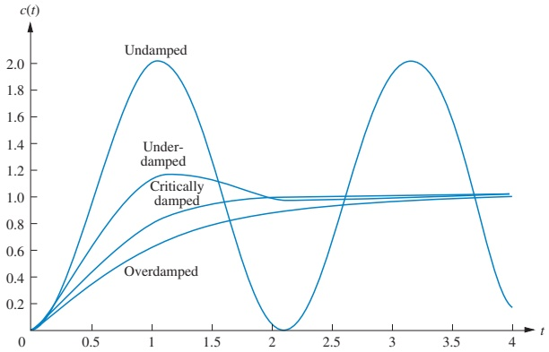
Summary: Natural Responses for Second-Order Systems
- Overdamped (\(\zeta > 1\)):
- Poles: \(-\sigma_1\), \(-\sigma_2\) real, distinct.
- Natural response: \[ c_n(t) = K_1 e^{-\sigma_1 t} + K_2 e^{-\sigma_2 t} \]
- Underdamped (\(0 < \zeta < 1\)):
- Poles: \(-\sigma_d \pm j\omega_d\).
- Natural response: \[ c_n(t) = A e^{-\sigma_d t}\cos(\omega_d t - \phi) \]
- Undamped (\(\zeta = 0\)):
- Poles: \(\pm j\omega_1\).
- Natural response: \[ c_n(t) = A\cos(\omega_1 t - \phi) \]
- Critically damped (\(\zeta = 1\)):
- Poles: repeated real \(-\sigma_1\).
- Natural response: \[ c_n(t) = K_1 e^{-\sigma_1 t} + K_2 t e^{-\sigma_1 t} \]
Skill Check – Classify Second-Order Responses
Given the transfer functions:
\(G(s) = \dfrac{400}{s^{2}+12s+400}\)
\(G(s) = \dfrac{900}{s^{2}+90s+900}\)
\(G(s) = \dfrac{225}{s^{2}+30s+225}\)
\(G(s) = \dfrac{625}{s^{2}+625}\)
By inspection, the step responses are:
\(c(t)=A+B e^{-6t}\cos(19.08t+\phi)\) (underdamped)
\(c(t)=A+B e^{-78.54t}+C e^{-11.46t}\) (overdamped)
\(c(t)=A+B e^{-15t}+C t e^{-15t}\) (critically damped)
\(c(t)=A+B\cos(25t+\phi)\) (undamped)
General Second-Order System in Standard Form
We rewrite
\[ G(s) = \frac{b}{s^{2} + a s + b} \]
in terms of natural frequency \(\omega_n\) and damping ratio \(\zeta\):
Set \(b = \omega_n^2\) → undamped poles at \(\pm j\omega_n\).
Use definition of damping ratio:
\[ \zeta = \frac{\text{decay frequency}}{\text{natural frequency}} = \frac{|\sigma|}{\omega_n} \]
For underdamped case, poles: \(s = -\frac{a}{2} \pm j\cdots\) → \(|\sigma| = a/2\).
So
\[ \zeta = \frac{a/2}{\omega_n} \Rightarrow a = 2\zeta \omega_n \]
Thus the standard form is:
\[ G(s) = \frac{\omega_n^{2}}{s^{2} + 2\zeta\omega_n s + \omega_n^{2}} \]
Example: Find \(\zeta\) and \(\omega_n\) from \(G(s)\)
(Example 4.3)
Given:
\[ G(s) = \frac{36}{s^2 + 4.2s + 36} \]
Compare with
\[ \frac{\omega_n^2}{s^2 + 2\zeta\omega_n s + \omega_n^2} \]
- \(\omega_n^2 = 36\) → \(\omega_n = 6\).
- \(2\zeta\omega_n = 4.2 \Rightarrow 2\zeta(6) = 4.2 \Rightarrow \zeta = 0.35\).
So:
- \(\omega_n = 6\) rad/s.
- \(\zeta = 0.35\) → underdamped.
Poles of the Standard Second-Order System
For
\[ G(s) = \frac{\omega_n^{2}}{s^{2} + 2\zeta\omega_n s + \omega_n^{2}}, \]
the poles are:
\[ s_{1,2} = -\zeta\omega_n \pm \omega_n\sqrt{\zeta^{2} - 1} \]
- If \(0 < \zeta < 1\) → complex conjugate pair (underdamped).
- If \(\zeta = 1\) → repeated real pole (critical).
- If \(\zeta > 1\) → two real distinct poles (overdamped).
- If \(\zeta = 0\) → purely imaginary poles (undamped).
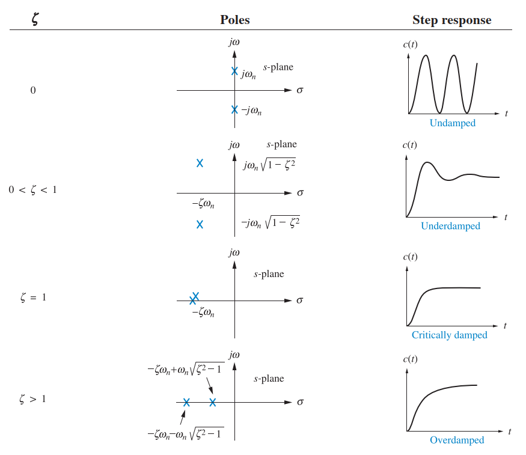
Example: Classifying Response from \(\zeta\)
(Example 4.4, Fig. 4.12)
Given several systems of form:
\[ G(s) = \frac{b}{s^2 + a s + b} \]
We use:
\[ \zeta = \frac{a}{2\sqrt{b}} \]
to compute \(\zeta\) and classify:
- If \(\zeta > 1\) → overdamped.
- If \(\zeta = 1\) → critically damped.
- If \(0 < \zeta < 1\) → underdamped.
For the three systems in Fig. 4.12:
- System (a): \(\zeta = 1.155\) → overdamped.
- System (b): \(\zeta = 1\) → critically damped.
- System (c): \(\zeta = 0.894\) → underdamped.
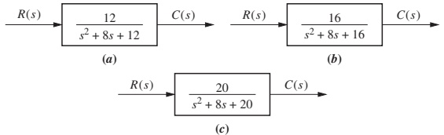
Underdamped Second-Order Step Response
For underdamped \(0 < \zeta < 1\):
\[ G(s) = \frac{\omega_n^{2}}{s^{2} + 2\zeta\omega_n s + \omega_n^{2}} \]
With unit step input \(R(s) = \frac{1}{s}\):
\[ C(s) = \frac{\omega_n^{2}}{s(s^{2} + 2\zeta\omega_n s + \omega_n^{2})} \]
After partial fractions and inverse Laplace (derivation omitted):
\[ \begin{aligned} c(t) &= 1 - e^{-\zeta\omega_n t}\Bigg( \cos\omega_n\sqrt{1-\zeta^{2}}\, t + \frac{\zeta}{\sqrt{1-\zeta^{2}}}\sin\omega_n\sqrt{1-\zeta^{2}}\, t \Bigg) \\ &= 1 - \frac{1}{\sqrt{1-\zeta^{2}}} e^{-\zeta\omega_n t} \cos\big(\omega_n\sqrt{1-\zeta^{2}}\, t - \phi\big) \end{aligned} \]
where
\[ \phi = \tan^{-1}\left(\frac{\zeta}{\sqrt{1 - \zeta^2}}\right) \]
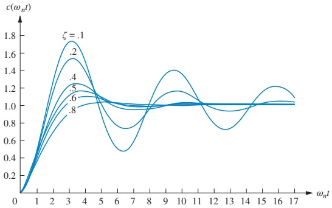
Under-damped Specs: Definitions
For the underdamped step response (Fig. 4.14):
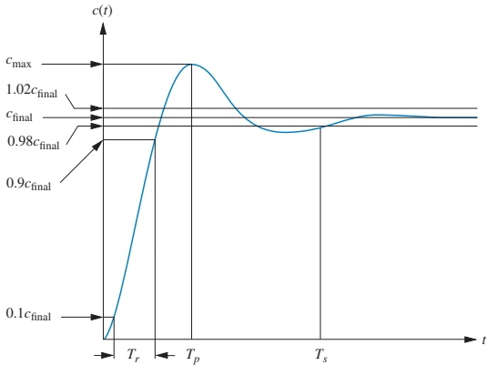
Definitions:
- Rise time \(T_r\) — time to go from 10% to 90% of final value.
- Peak time \(T_p\) — time to the first (maximum) peak.
- Percent overshoot %OS — \[ \%OS = \frac{c_{\max} - c_{\text{final}}}{c_{\text{final}}} \times 100\% \]
- Settling time \(T_s\) — time to enter and stay within \(\pm 2\%\) of final value.
Deriving Peak Time \(T_p\)
For \(c(t)\) given earlier:
- Differentiate \(c(t)\), set \(\dot{c}(t)=0\) to find extrema.
- Using Laplace differentiation property,
\[ \mathcal{L}[\dot{c}(t)] = sC(s) = \frac{\omega_n^2}{s^{2}+2\zeta\omega_ns+\omega_n^{2}} \]
Inverse Laplace gives:
\[ \dot{c}(t) = \frac{\omega_n}{\sqrt{1-\zeta^2}} e^{-\zeta\omega_n t} \sin\left(\omega_n\sqrt{1-\zeta^2}\,t\right) \]
Set \(\dot{c}(t)=0\):
\[ \omega_n\sqrt{1-\zeta^2}\,t = n\pi \Rightarrow t = \frac{n\pi}{\omega_n\sqrt{1-\zeta^2}} \]
First nonzero peak: \(n = 1\) →
\[ T_p = \frac{\pi}{\omega_n\sqrt{1-\zeta^2}} \]
Deriving Percent Overshoot %OS
From the definition:
\[ \%OS = \frac{c_{\max} - c_{\text{final}}}{c_{\text{final}}}\times100 \]
For a unit step, \(c_{\text{final}} = 1\).
Evaluate \(c(t)\) at \(t = T_p\):
\[ c_{\max} = c(T_p) = 1 + e^{-\frac{\zeta\pi}{\sqrt{1-\zeta^2}}} \]
So
\[ \%OS = e^{-\frac{\zeta\pi}{\sqrt{1-\zeta^2}}}\times100 \]
This depends only on \(\zeta\).
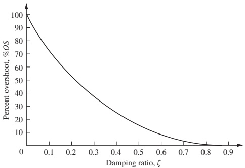
Inverse relationship:
\[ \zeta = \frac{-\ln(\%OS/100)}{\sqrt{\pi^2 + \ln^2(\%OS/100)}} \]
Tip
Design trick: If the specs give you maximum %OS, use this formula to compute \(\zeta\).
Deriving Settling Time \(T_s\)
We want \(|c(t) - 1| \le 0.02\) for all \(t \ge T_s\).
Approximate envelope of oscillation from \(c(t)\):
\[ \left|\frac{1}{\sqrt{1-\zeta^2}}e^{-\zeta\omega_n t}\right| \le 0.02 \]
Solve
\[ \frac{1}{\sqrt{1-\zeta^2}}e^{-\zeta\omega_n t} = 0.02 \]
\[ T_s = \frac{-\ln(0.02\sqrt{1-\zeta^2})}{\zeta\omega_n} \]
Numerator changes slowly with \(\zeta\); we often approximate:
\[ T_s \approx \frac{4}{\zeta\omega_n} \]
Rise Time \(T_r\) for Underdamped Systems
There is no simple closed-form formula like for \(T_p\) or \(T_s\).
Approach:
- Normalize time by \(\omega_n\) (use variable \(\omega_n t\)).
- For a given \(\zeta\), numerically solve
- \(c(t) = 0.1\) and \(c(t) = 0.9\),
- Then \(T_r = t_{0.9} - t_{0.1}\).
Result (computed values) plotted as normalized rise time:
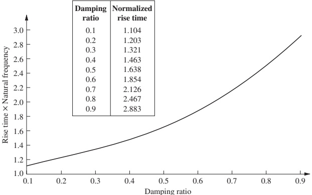
Given \(\zeta\) and \(\omega_n\):
- Find \(\omega_n T_r\) from the plot/table.
- Then \(T_r = (\omega_n T_r)/\omega_n\).
Example: Compute \(T_p\), %OS, \(T_s\), \(T_r\)
(Example 4.5)
Given
\[ G(s) = \frac{100}{s^2 + 15s + 100} \]
Put in standard form:
- \(\omega_n^2 = 100\) → \(\omega_n = 10\).
- \(2\zeta\omega_n = 15\) → \(\zeta = \frac{15}{2\cdot10} = 0.75\).
Use formulas:
\(T_p = \dfrac{\pi}{\omega_n\sqrt{1-\zeta^{2}}} = \dfrac{\pi}{10\sqrt{1-0.75^2}} \approx 0.475\,\)s.
\(\%OS = e^{-\zeta\pi/\sqrt{1-\zeta^2}}\times100 \approx 2.84\%\).
\(T_s \approx \dfrac{4}{\zeta\omega_n} = \dfrac{4}{0.75\cdot10} \approx 0.533\,\)s.
From Fig. 4.16, for \(\zeta=0.75\), \(\omega_n T_r \approx 2.3\) → \(T_r = 2.3/10 = 0.23\,\)s.
Geometric Interpretation in the \(s\)-Plane
For underdamped poles:
\[ s_{1,2} = -\zeta\omega_n \pm j\omega_n\sqrt{1-\zeta^2} \]
In the \(s\)-plane (Fig. 4.17):
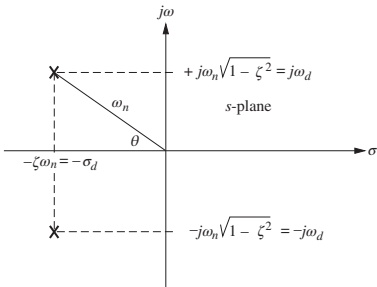
- Radial distance from origin: \(\omega_n\).
- Angle \(\theta\) from negative real axis: \(\cos\theta = \zeta\).
- Real part magnitude: \(\sigma_d = \zeta\omega_n\).
- Imag part: \(\omega_d = \omega_n\sqrt{1-\zeta^2}\).
Time-domain specs in terms of pole coordinates:
- \(T_p = \dfrac{\pi}{\omega_d}\).
- \(T_s \approx \dfrac{4}{\sigma_d}\).
Note
Lines of: - constant \(\zeta\) → rays from origin (constant angle). - constant \(T_p\) → horizontal lines (constant imaginary part). - constant \(T_s\) → vertical lines (constant real part).
Lines of Constant \(T_p\), \(T_s\), and %OS
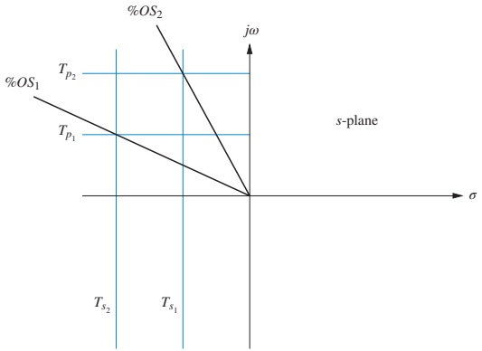
Interpretation:
- Vertical lines: same real part → same exponential damping → approximate same \(T_s\).
- Horizontal lines: same imaginary part → same oscillation frequency → same \(T_p\).
- Radial lines: same \(\zeta\) → same %OS.
How Pole Movement Affects Response
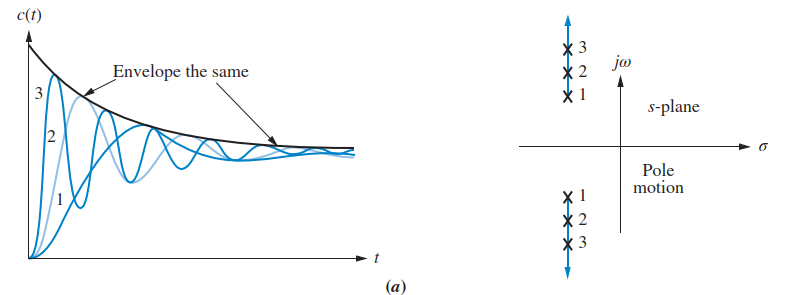
- Move poles vertically (constant real part) → Fig. 4.19(a):
- Same decay envelope (same \(\sigma_d\) → same \(T_s\)).
- Higher imaginary part → faster oscillation, smaller \(T_p\), higher overshoot.
- Move poles horizontally (constant imaginary part) → Fig. 4.19(b):
- Same oscillation frequency, same \(T_p\).
- Larger real part (farther left) → faster decay, smaller \(T_s\), smaller overshoot.
- Move radially (constant \(\zeta\)) → Fig. 4.19(c):
- Same %OS.
- Larger distance from origin → faster response overall (both \(T_p\) and \(T_s\) smaller).
Example: Time Specs from Pole Location
(Example 4.6)
Given poles at (Fig. 4.20):
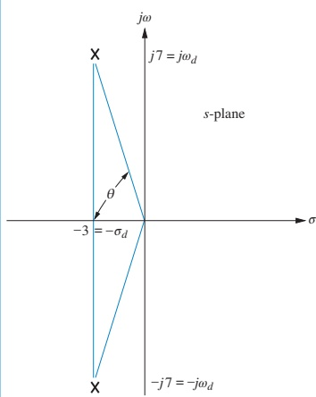
- Real part: \(-3\) → \(\sigma_d = 3\).
- Imag part: \(7\) → \(\omega_d = 7\).
- Radial distance: \(\omega_n = \sqrt{3^2 + 7^2} = 7.616\).
- Angle: \(\theta = \tan^{-1}(7/3)\) → \(\zeta = \cos\theta = 0.394\).
Now compute:
\(T_p = \dfrac{\pi}{\omega_d} = \dfrac{\pi}{7} \approx 0.449\,\)s.
\(\%OS = e^{-\zeta\pi/\sqrt{1-\zeta^2}}\times100 \approx 26\%\).
\(T_s \approx \dfrac{4}{\sigma_d} = \dfrac{4}{3} \approx 1.33\,\)s.
Design Example: Mechanical System Specs → Component Values
(Example 4.7)
Rotational mechanical system (Fig. 4.21):
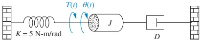
Transfer function:
\[ G(s) = \frac{\Theta(s)}{T(s)} = \frac{1/J}{s^2 + (D/J)s + (K/J)} \]
Put in standard form:
- \(\omega_n^2 = K/J \Rightarrow \omega_n = \sqrt{K/J}\).
- \(2\zeta\omega_n = D/J\).
Specifications:
%OS = 20% → from Eq. (4.39), \(\zeta \approx 0.456\).
\(T_s = 2\) s → from \(T_s = 4/(\zeta\omega_n)\):
\[ 2 = \frac{4}{\zeta\omega_n} \Rightarrow \zeta\omega_n = 2 \]
Thus:
\(2\zeta\omega_n = 4 = D/J\).
From \(\zeta = 2\sqrt{J/K}\) (algebra), and \(\zeta = 0.456\),
\[ 2\sqrt{\frac{J}{K}} = 0.456 \Rightarrow \frac{J}{K} \approx 0.052 \]
Given \(K = 5\,\mathrm{N\cdot m/rad}\):
- \(J = 0.052 K = 0.26\,\mathrm{kg\cdot m^2}\).
- From \(D/J = 4\), \(D = 4J = 1.04\,\mathrm{N\cdot m\cdot s/rad}\).
Important
We translated time-domain specs (overshoot and settling time) into physical design parameters \(J\) and \(D\).
Skill Check – Complete Spec from \(G(s)\)
(Exercise 4.5)
Given:
\[ G(s) = \frac{361}{s^{2}+16s+361} \]
- \(\omega_n^{2} = 361 \Rightarrow \omega_n = 19\).
- \(2\zeta\omega_n = 16 \Rightarrow \zeta = \frac{16}{2\cdot 19} = 0.421\).
- \(T_s \approx \frac{4}{\zeta\omega_n} = \frac{4}{0.421\cdot19} \approx 0.5\) s.
- \(T_p = \frac{\pi}{\omega_n\sqrt{1-\zeta^{2}}} \approx 0.182\) s.
- From Fig. 4.16: \(\omega_n T_r \approx 1.5\) (for \(\zeta\approx 0.42\)) → \(T_r \approx 0.079\) s.
- \(\%OS = e^{-\zeta\pi/\sqrt{1-\zeta^2}}\times100 \approx 23.3\%\).
Summary / Key Points
- Poles and zeros give a powerful, often qualitative way to predict time response:
- Input poles → forced response shape.
- System poles → natural response shape.
- Zeros and poles determine amplitudes.
- First-order systems:
- Step response: \(1 - e^{-at}\).
- Time constant \(\tau = 1/a\) fully characterizes transient speed.
- \(T_r \approx 2.2\tau\), \(T_s \approx 4\tau\).
- Second-order systems:
- Standard form: \(\dfrac{\omega_n^2}{s^2+2\zeta\omega_n s+\omega_n^2}\).
- \(\omega_n\) sets time scale; \(\zeta\) sets damping/shape.
- Behavior classification: overdamped, critically damped, underdamped, undamped.
- Underdamped second-order step response:
- \(T_p = \dfrac{\pi}{\omega_n\sqrt{1-\zeta^2}}\).
- \(\%OS = e^{-\zeta\pi/\sqrt{1-\zeta^2}}\times100\).
- \(T_s \approx \dfrac{4}{\zeta\omega_n}\).
- \(T_r\) from normalized curves vs \(\zeta\).
- s-plane geometry:
- Lines of constant \(\zeta\), \(T_p\), \(T_s\), and %OS provide an intuitive design map.
Formulas Summary – First- & Second-Order Time Response
First-order system
Transfer function: \[ G(s) = \frac{K}{s+a},\quad a>0 \]
Unit step response: \[ c(t) = \frac{K}{a}\left(1-e^{-at}\right) \]
Time constant: \(\tau = 1/a\).
Rise time (10–90%): \(T_r \approx 2.2/a = 2.2\tau\).
Settling time (2%): \(T_s \approx 4/a = 4\tau\).
Second-order standard form
Transfer function: \[ G(s) = \frac{\omega_n^{2}}{s^{2}+2\zeta\omega_n s+\omega_n^{2}} \]
Poles: \[ s_{1,2} = -\zeta\omega_n \pm j\omega_n\sqrt{1-\zeta^{2}} \]
Damped natural frequency: \[ \omega_d = \omega_n\sqrt{1-\zeta^{2}} \]
Underdamped second-order (unit step)
Response: \[ c(t) = 1 - \frac{1}{\sqrt{1-\zeta^{2}}}e^{-\zeta\omega_n t} \cos(\omega_n\sqrt{1-\zeta^{2}}\, t - \phi) \]
Peak time: \[ T_p = \frac{\pi}{\omega_n\sqrt{1-\zeta^{2}}} = \frac{\pi}{\omega_d} \]
Percent overshoot: \[ \%OS = e^{-\frac{\zeta\pi}{\sqrt{1-\zeta^{2}}}}\times100 \]
Inverse relation: \[ \zeta = \frac{-\ln(\%OS/100)}{\sqrt{\pi^{2}+\ln^{2}(\%OS/100)}} \]
Settling time (2%): \[ T_s \approx \frac{4}{\zeta\omega_n} \]
Rise time: \[ \omega_n T_r \text{ from lookup vs. } \zeta,\quad T_r = \frac{\omega_n T_r}{\omega_n} \]
Optional Concept Map (Mermaid Diagram)
Time Response – Interactive Deck
Getting Started: Live Python in the Browser
You can run Python code directly in this slide using Pyodide.
Try modifying the parameters and re-running.
Interactive: First-Order Step Response Shape
Explore how the first-order step response
\[ c(t) = 1 - e^{-a t} \]
changes as the pole location \(s=-a\) moves.
Reactive Controls: First-Order System Explorer
Use the slider to change the pole location \(s=-a\) and see how the step response changes.
Interactive: Second-Order Parameters from Coefficients
Given
\[ G(s) = \frac{b}{s^2 + a s + b} \]
we have
\[ \omega_n = \sqrt{b}, \quad \zeta = \frac{a}{2\sqrt{b}} \]
Try changing \(a\) and \(b\) and see how \(\zeta\) and \(\omega_n\) change.
Reactive: Second-Order \((\zeta, \omega_n)\) → Time Specs
Use sliders to pick \(\zeta\) and \(\omega_n\), then see \(T_p\), \(T_s\), and %OS.
Reactive Plot: Underdamped Second-Order Step Response
Now visualize the full step response for your chosen \((\zeta, \omega_n)\).
Reactive: From Poles in the \(s\)-Plane to Time Specs
Use sliders to set the real and imaginary parts of a complex pole pair \(s = -\sigma_d \pm j\omega_d\) (under-damped case only, \(\sigma_d>0\), \(\omega_d>0\)).
Reactive Plot: Pole Location and Step Response Together
This block simultaneously shows:
- Pole positions in the \(s\)-plane.
- Corresponding underdamped step response.
Design Sandbox: Meet a %OS and \(T_s\) Spec
Suppose we want an underdamped second-order system with:
- Max %OS requirement: \(\leq\) given spec.
- Settling time \(T_s\) requirement: \(\leq\) given spec.
We’ll: 1. Choose a %OS spec, compute \(\zeta\). 2. Choose a \(T_s\) spec, compute \(\omega_n\). 3. Show the resulting step response.
Wrap-Up Interactive Reflections
Use the editors and reactive controls to answer:
- How does moving real poles left or right impact:
- First-order response speed?
- Second-order \(T_s\) and \(T_p\)?
- How does changing damping ratio \(\zeta\) at fixed \(\omega_n\) affect:
- Percent overshoot?
- Number of oscillations before settling?
- For a given performance requirement (e.g., \(T_s\) and %OS), can you:
- Compute suitable \(\zeta\) and \(\omega_n\)?
- Sketch approximate pole locations in the \(s\)-plane?